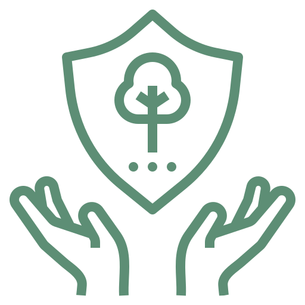
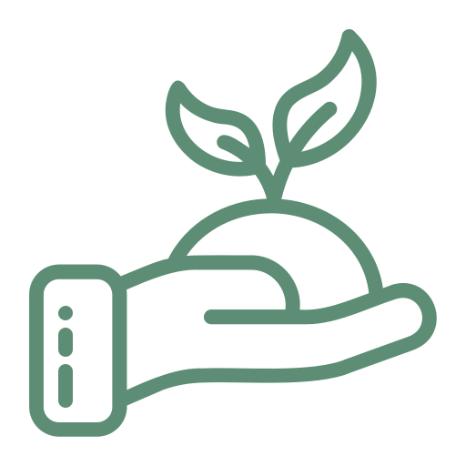
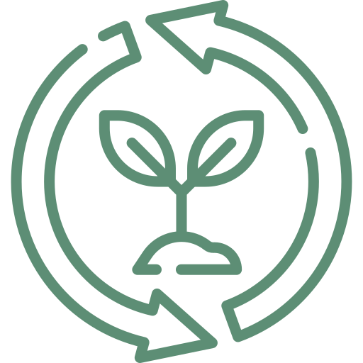

Club Activities
With support from the Center for Nature and Urban Wildlife, the Sonoran Desert Club has been able to involve themselves in:

Community Projects

Preservation

Restoration

Conservation
Past Activities

CNUW Plant Sale
Club members were able to help CNUW and learn how to grow and cultivate native plants throughout the semester, and help people learn and pick the right plants during the sale.

Monarch Waystation Planting
Sonoran Desert Club members participated in adding host plants like milkweed to provide a habitat on campus for the endangered monarch butterflies and be able to attract and support pollinators.